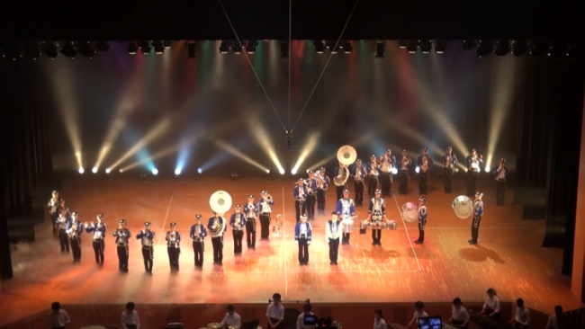

Home トップページ
奈良高専吹奏楽部のホームページへようこそ
このホームページでは奈良高専吹奏楽部の演奏会情報やコンクール結果などを掲載しています。
なお、このホームページは奈良高専の公式Webサイトではありません。
演奏会のお知らせ
第41回関西高専合同演奏会
日時：2018年3月24日(土) 開場：未定 開演：未定
会場：あましんアルカイックホール（尼崎市文化センター）
入場料：無料
その他の演奏会，出演情報は Concertsをご覧ください。
最近の更新
2017/05/31 Twitter,Concertsを更新しました
2017/04/10 Home,Concertsを更新しました
2017/03/31 Concertsを更新しました
2017/03/27 Home,Concertsを更新しました
2017/01/21 Concoursのレイアウト,メールアドレス,トップ画像を変更しました
ご意見･質問等がございましたらnit_naracollege_band[at]yahoo.co.jpまでお気軽にお申し付けください。